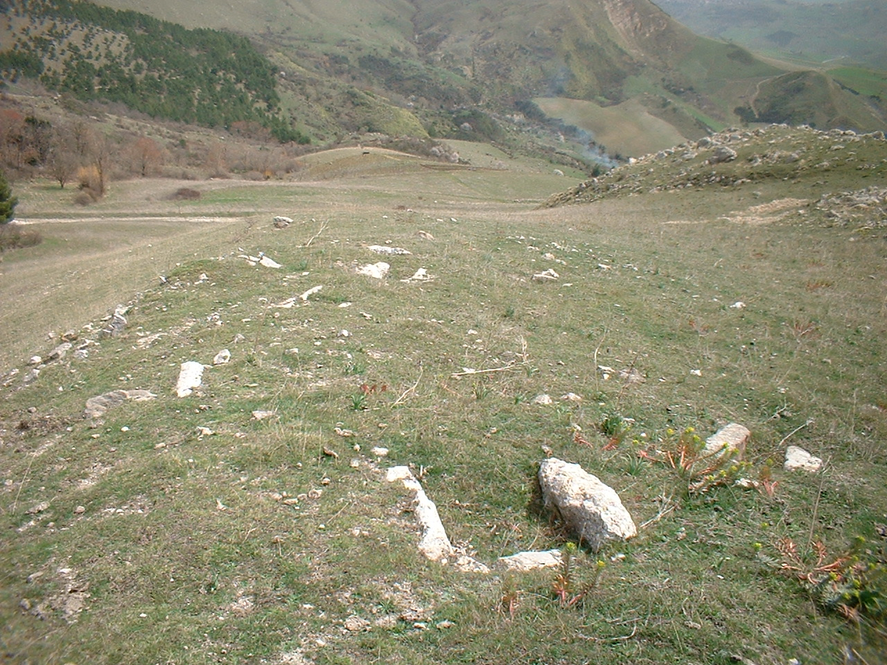

Cozzo Morto

ITALIANO - Peculiare rilievo costituito da rocce evaporitiche afferenti al “Calcale di Base”, delimitato tettonicamente nei settori settentrionali e composto da banconi calcarei compatti con intercalazioni marnose. Essi si presentano con il classico colore grigio‐ biancastro che, per alterazione superficiale, vira al rosso‐giallastro. Nel settore occidentale del rialzo si rileva la presenza di una piccola cava abbandonata, in cui è possibile spiegare didatticamente la presenza di una faglia. Su “Cozzo Morto” si riscontra anche un singolare sito archeologico, oramai annichilito dal tempo. (Messiniano inf.)
ENGLISH - Peculiar relief consisting of evaporitic rocks lead to the “Calcale di Base”, tectonically delimited in the northern sectors and composed by compact calcareous counters with marly intercalations. They are bordered by the classic greyish-white colour which, due to superficial alteration, turns yellowish red. In the western sector of the rise there is the presence of a small abandoned quarry, in which it is possible to explain didactically the presence of a fault. On “Cozzo Morto” there is also a singular archeological site, now annihilated by time. (Messiniano inf.)